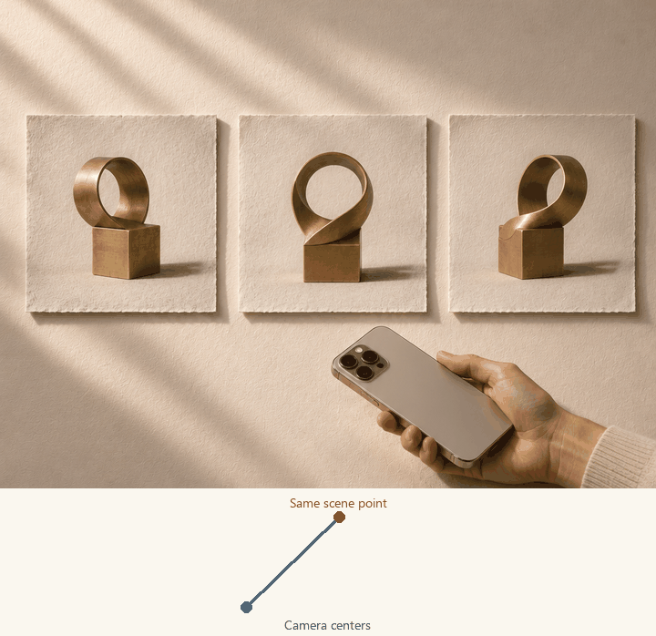
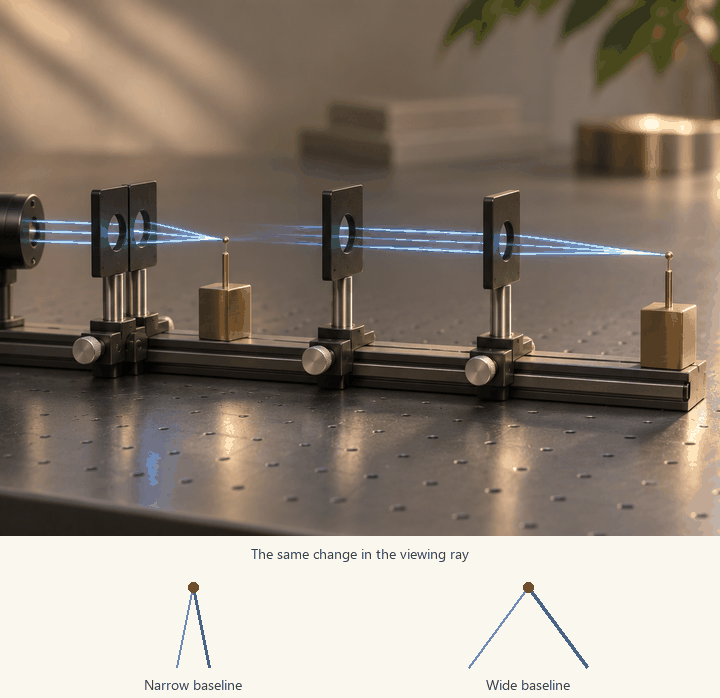

3D Vision — Why a Good Match Can Give You Bad Depth
When I first looked at structure from motion, I thought the hard part would be matching the same point across images. Once I knew those two pixels came from the same corner of a desk, getting its position in 3D sounded like geometry I could leave to the code.
Then I imagined filming the desk while standing still and turning my phone. The corner might be easy to match across dozens of frames. But if the camera only rotates about its optical center, all those views still come from the same place. I learn which direction the corner is in. I get almost no help answering the question I actually care about: how far away is it?

What the matcher actually gave me
I find it helpful to stop at the output of the matching code and say exactly what I have. I have two pixel coordinates, each from a different image. If the camera is calibrated, each coordinate gives me a ray pointing into the scene. For a single ray, the corner could be ten centimeters away or ten meters away. The location along that ray is still open.
The second ray is supposed to narrow that down. Draw two rays that meet at a steep angle, then nudge one a little. The intersection moves a little. Now try the same thing with two rays that are almost parallel. Their intersection can slide a long way. Once I drew that on paper, I stopped expecting the matcher to tell me how good my depth estimate was. It can tell me I probably found the same corner twice. The camera motion determines how much I can learn from that match.
That made me rethink something as mundane as choosing which frames to feed into a reconstruction pipeline. Two nearby frames tend to be easy to match, but if the camera barely moved between them, the resulting depth can be sensitive to a tiny error in where I locate a feature. Frames farther apart might give me better geometry, provided I can still recognize enough of the same points. Skipping frames is a trade-off between those two things.
Why I would keep track of the frames that failed
There’s an easy trap in an experiment like this. Suppose I increase the gap between frames and the average reprojection error goes down. That could mean I found a better baseline. It could also mean the pipeline gave up on the difficult frames and the average now describes an easier subset.
If I tried this with my phone, I’d use one clip and reconstruct it several times with different frame intervals. For each run I’d report how many images I gave the solver, how many it managed to place, and what parts of the desk actually appeared in the point cloud. I’d also pick one feature that survives across runs and look at its geometry directly. A lower error would be easier to interpret if I could see what the solver was still managing to reconstruct.
I’d keep the camera motion in mind when comparing results. Skipping five frames while walking sideways does something very different from skipping five frames while standing in place. The frame interval is easy to set in code. The change in viewpoint is the thing I really care about.
It also explains why I’d be careful with a number like reprojection error. A point can land close to the right pixels in the input views and still have poorly constrained depth. If the rays from two cameras are nearly parallel, small changes in those rays can move their intersection a long way.

What a convincing point cloud still leaves open
There’s one more detail that would stop me from calling the experiment a success too quickly. A monocular reconstruction can recover a scene up to an overall scale. A small desk close to the camera and a scaled-up version farther away can give the same image measurements if the camera motion scales too. If I want to say the algorithm recovered distances in centimeters, I need a known length or another source of scale.
I like that this limit survives even if every step of the software works. It forces me to separate what the images actually tell me from what I happen to know because I was standing in the room.
So if I were filming that desk for a reconstruction, I’d spend less time thinking about how many frames I could collect and more time thinking about how I was holding the phone. I’d take a step sideways. That step gives the solver something a hundred extra frames from the same spot couldn’t. ETH Zürich 3D Vision